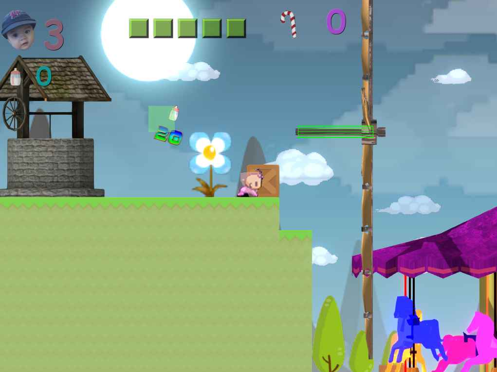
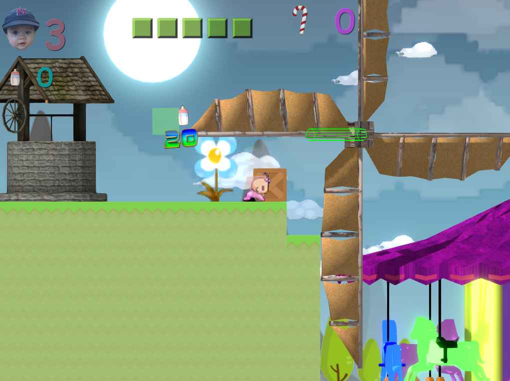
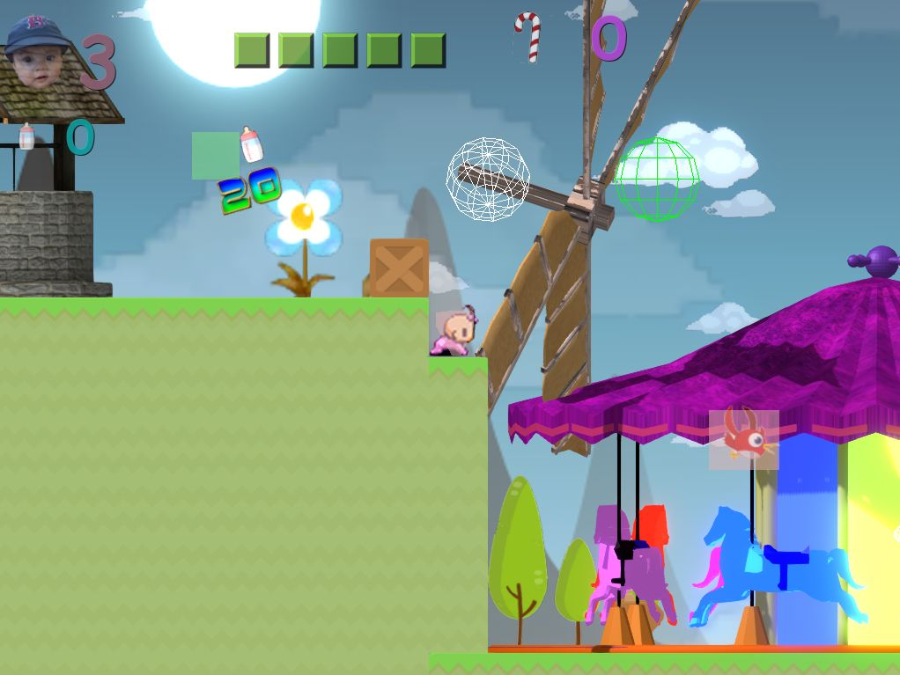

Hello
I’m trying to rotate a model around an axis (windmill wings), here’s the model as imported without any change, the rotation works perfectly fine I define an angular velocity:

I defined a second node with the same height and used LookAt, it effectively turns the wings in the desired direction:

But then when I apply an angular velocity, the wings rotate around a point, going up and down. I tried to define a constraint but it move the second node, and if I make the second node body static (no mass), the model doesn’t move at all

Here’s the code I used:
AnimatedModel* wheelObject = tileNode->CreateComponent<AnimatedModel>();
wheelObject->SetModel(cache->GetResource<Model>("Models/WindMillWings.mdl"));
wheelObject->SetCastShadows(true);
wheelObject->SetMaterial(0, cache->GetResource<Material>("Materials/Windmill/Wood.xml"));
wheelObject->SetMaterial(1, cache->GetResource<Material>("Materials/Windmill/Cloth.xml"));
RigidBody * Body = tileNode->CreateComponent<RigidBody>();
CollisionShape * Shape = tileNode->CreateComponent<CollisionShape>();
//Shape->SetCylinder(0.25, 1.6,Vector3(0.5,0.0,0.0),Quaternion(90.0));
Shape->SetSphere(1.0);
Body->SetMass(0.1f);
Body->SetGravityOverride(Vector3(0.0, 0.0, 0.0));
Body->SetUseGravity(false);
Body->SetLinearDamping(0.0f);
Body->SetAngularDamping(0.0f);
Body->SetAngularVelocity(Vector3(2.0, 0.0, 0.0));
Body->SetCollisionLayer(1);
Node * anchorNode = sceneGame_->CreateChild();
anchorNode->SetPosition(Vector3(tileNode->GetPosition().x_ + 2.0, tileNode->GetPosition().y_, tileNode->GetPosition().z_ +5.0));
RigidBody * anchorBody = anchorNode->CreateComponent<RigidBody>();
CollisionShape * anchorShape = anchorNode->CreateComponent<CollisionShape>();
anchorShape->SetSphere(1.0);
anchorBody->SetMass(0.1f);
anchorBody->SetUseGravity(false);
tileNode->LookAt(anchorNode->GetPosition());
Constraint* wingsConstraint = tileNode->CreateComponent<Constraint>();
wingsConstraint->SetConstraintType(CONSTRAINT_HINGE);
wingsConstraint->SetOtherBody(anchorBody);
wingsConstraint->SetWorldPosition(tileNode->GetPosition());
wingsConstraint->SetAxis(Vector3::UP);
wingsConstraint->SetDisableCollision(true);
And the model:
https://ufile.io/s6hhx
I tried used a rotation attribute animation but I’ve got the same problem
It’s probably not that complicated but I’ve been trying to fix that for almost one day

thanks